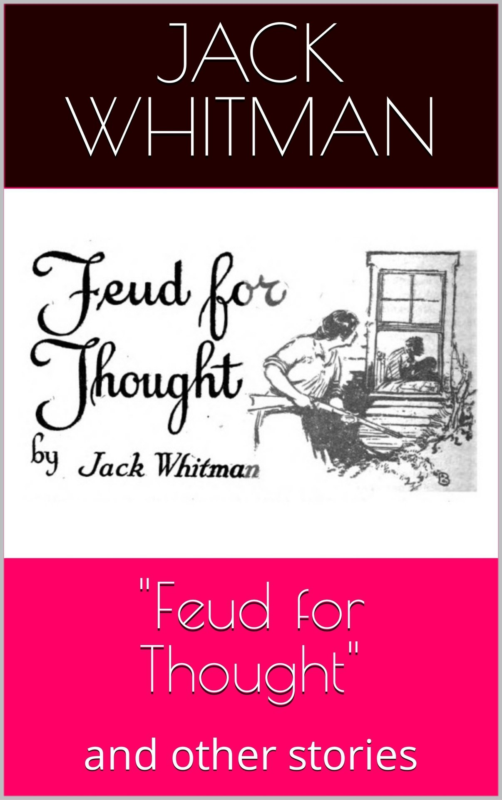

While most of this book consists of motion picture industry yarns, the opening Western story is great fun.
Excerpt from the lead story “Feud for Thought”
Bill had stepped into the store, it seems, to look for me. There he had seen Old Rose, which he had never heard of, pickin’ up a sack of flour she had just bought off Jim and startin’ out the door with it on her shoulder. The other gents standing in front of the store, and knowin’ Old Rose, made no effort whatever to be chivalrous, but Bill steps up to her like Mr. Galahad and says:
“Allow me, please!"
With that he takes the sack of flour on his own shoulder, not caring about the suit he was wearin’ at all, and carries it out to the cart. Old Rose is too flabbergasted to say anything, but she don’t like it a little. Her motto is: “I won’t be beholden to ye!"
Bill puts the sack of flour on the cart, takes off his cityfied hat, and makes a bow like an actor I saw once in Kansas City.
“Who be ye?" Old Rose demands.
“Bill Haskell, ma’am, at yer service!" he grins back, not knowin’ at all that the name of Haskell is a battle-cry to this here amazon. Well, she ups and slaps his grinnin’ face, which goes on grinnin’ just the same, and then she lets him have it. What she told him about the tribe he belonged to would sure fill one of these geeny-geology books.
Bill never says a word—just stands and grins at her, like she was Mrs. Vanderbilt handin’ him a cup of tea and him the guest of honor at this barbecue.
That was where I woke up, when Old Rose had all those cracker hounds over at the store laughin’ at the show. Then she gets into her cart, not stoppin’ her cuss words at all, and leaves Bill, grinnin’ and wavin’ good-by to her, in the center of that gang of roughnecks. I get over to Jim Slade’s just in time to hear him turn to the crowd and say: “What a splendid old lady! Can anyone tell me her name?"
That’s the way they bring ’em up back there east of the Hudson. That’s the way this younger generation is. Along comes a young feller like Bill, with no appreciation at all for the historic significance of a feud that has been kept goin’ nice for many years, and tries to spoil it all.
(9 stories, 152 pages.)
|

|